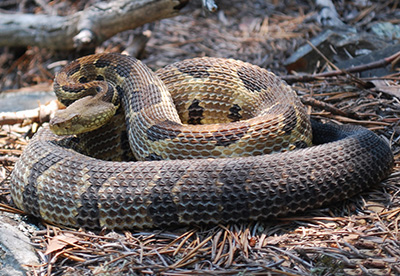

Warning! These snakes are venomous! Do not try to approach venomous snakes or capture them. If you see a snake which you determine to be venomous stay clear of it and to not attempt to move or harm the snake.
Although snake bites are rarely fatal they can cause damage to the flesh where bitten and are extremely painful. If you or someone else if bitten seek medical attention immediately. Also you should be familiar with some snake bite first aid. You can find this online such as this link: https://www.mayoclinic.org/first-aid/first-aid-snake-bites/basics/art-20056681
|
Eastern Copperhead The scientific name for the Eastern Copperhead is Agkistrodon contortrix mokasen. Found in forests, fields, high ground in swamps and marshes. They also inhabit areas around people, like suburban lots and agricutural lands. They can even be found close to the dunes at beaches. Habitats for the Eastern Copperhead are widesptead through out the entire state of Virginia. |
|
|
Northern Cottonmouth The scientific name for the Northern Cottonmouth is Agkistrodon piscivorus. Also commonly known as the "water moccasin" this is mostly aquatic snake. They are usually found in swamps, rivers lakes and ponds as well as forest and fields near wetlands. The cotton mouth is mostly limited to the south eastern counties of Virginia, below the James river. The non-venomous northen water snake is often mistaken for the cotton mouth. |
|  |
Timber Rattlesnake The scientific name for the Timber Rattlesnake is Crotalus horridus. Found in forests, fields, meadows near swampy areas, in shrubs, and in caves. The timber rattlesnake is mostly found in the highlands of the Shenandoah valley and parts of the south east of Virginia below the James river. |
All pictures copyrighted by the Virginia Herpetological Society http://www.virginiaherpetologicalsociety.com/index.html. Photos used with permission.